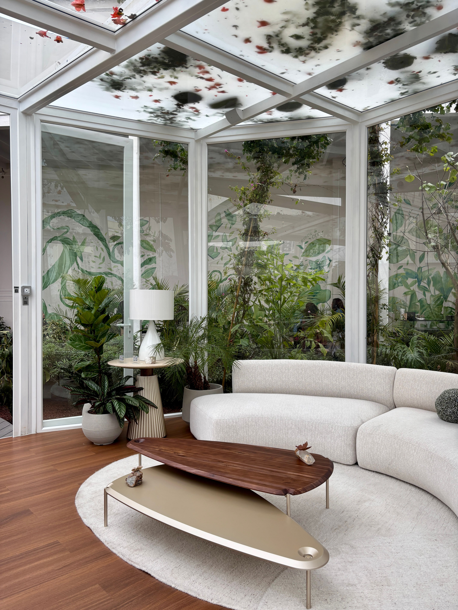

En este artículo
Introducción
Guía para mejorar la iluminación del dormitorio con luz general, ambiental y de lectura sin sacrificar comodidad ni seguridad.
Antes de aplicar cualquier cambio conviene observar las condiciones reales y definir qué problema se quiere resolver. Esta planificación permite evitar soluciones genéricas, compras innecesarias y rutinas difíciles de mantener.
La guía está organizada en tres bloques prácticos para conservar la misma estructura editorial de Casa & Jardín: un primer paso de diagnóstico, un segundo bloque de aplicación y un tercero de mantenimiento y prevención.
Las recomendaciones deben adaptarse al espacio, al clima y a las instrucciones de fabricantes o profesionales cuando corresponda. En tareas técnicas o de riesgo, la seguridad siempre tiene prioridad.
Aprovecha la luz natural y define las necesidades
Un dormitorio necesita diferentes niveles de luz a lo largo del día. Por la mañana puede requerir claridad para vestirse; por la noche, una iluminación suave ayuda a crear un ambiente de descanso. Antes de comprar lámparas, observa qué actividades realizas en la habitación y en qué zonas falta luz.
Aprovecha la luz natural manteniendo ventanas despejadas. Cortinas dobles permiten combinar privacidad y entrada de claridad. Un tejido ligero funciona durante el día y una capa opaca ayuda a oscurecer para dormir. Comprueba que las cortinas puedan retirarse completamente del cristal.
La orientación cambia la intensidad. Una ventana al este recibe sol de mañana; una al oeste puede producir calor y brillo intenso por la tarde. Utiliza cortinas o estores regulables para adaptarte sin mantener la habitación oscura todo el día.
Los espejos pueden reflejar luz, pero colócalos con cuidado para evitar deslumbramientos desde la cama. Un espejo frente a una ventana puede aumentar claridad, mientras uno que refleja una lámpara brillante puede resultar molesto por la noche.
Observa los colores de paredes y muebles. Superficies claras reflejan más luz; tonos profundos absorben una parte mayor y pueden requerir más puntos de iluminación. Esto no significa que un dormitorio oscuro sea incorrecto, sino que necesita una planificación diferente.
Define tres funciones: luz general para moverte y ordenar, luz de tarea para lectura o escritorio y luz ambiental para relajarte. No necesitas muchas lámparas, pero cada fuente debería resolver un propósito concreto.
Prueba la habitación de noche antes de añadir más puntos. Identifica exactamente qué zona queda oscura o dónde aparece deslumbramiento. Resolver un problema específico es más efectivo que aumentar indiscriminadamente la potencia.
Consejo práctico
Aplica los cambios de forma gradual, observa el resultado durante varios días y corrige solo aquello que realmente lo necesite. Este método facilita identificar qué decisión funciona mejor y evita intervenciones innecesarias.
Combina luz general, ambiental y puntual
La luz general puede provenir de un plafón, una lámpara de techo o varios focos. La luminaria debe adaptarse a la altura del techo. En habitaciones bajas, un modelo compacto evita golpes y mantiene el espacio visualmente despejado.

La iluminación ambiental puede provenir de lámparas de mesa, apliques o luz indirecta. Su función es suavizar contrastes y crear una escena tranquila. Varias fuentes de baja intensidad suelen resultar más agradables que un único punto muy brillante.
Para leer en la cama, coloca una lámpara orientable ligeramente por encima y al lado del hombro. Evita que la bombilla quede directamente en el campo visual. Si duermen dos personas, controles independientes y haces de luz dirigidos permiten que una lea sin iluminar toda la habitación.
En un escritorio, utiliza una fuente de tarea propia. Si eres diestro, colocarla hacia el lado izquierdo suele reducir la sombra de la mano; si eres zurdo, el lado contrario puede funcionar mejor. Ajusta según la actividad.
Los apliques liberan espacio en mesillas pequeñas. Los colgantes también pueden funcionar, pero su altura debe calcularse para que no golpees la luminaria al levantarte. Cualquier conexión eléctrica fija debe instalarse conforme a normativa.
Las tiras LED pueden crear luz indirecta detrás de un cabecero o mueble, siempre que se utilicen productos seguros y fuentes de alimentación compatibles. Evita instalaciones improvisadas o tiras cubiertas por textiles.
Una luz nocturna cercana al suelo facilita levantarse sin encender todo el dormitorio. Sensores de movimiento pueden ser útiles, especialmente para personas mayores, siempre que activen una intensidad baja y no deslumbren.
¿Qué debemos tener en cuenta?
Aplica los cambios de forma gradual, observa el resultado durante varios días y corrige solo aquello que realmente lo necesite. Este método facilita identificar qué decisión funciona mejor y evita intervenciones innecesarias.
Elige temperatura, bombillas y controles adecuados
La temperatura de color influye en la sensación. Muchas personas prefieren una luz cálida durante la noche, mientras una luz algo más neutra puede ser útil al vestirse. Mantén cierta coherencia para que las lámparas visibles simultáneamente no parezcan completamente diferentes.
Además de la temperatura, revisa el flujo luminoso en lúmenes. Los vatios indican consumo, no cantidad de luz de forma directa. Comparar lúmenes ayuda a elegir bombillas con la intensidad necesaria sin sobredimensionar.
La reproducción de color importa si eliges ropa, maquillas o trabajas con colores. Una fuente con buena reproducción cromática permite distinguir tonos de forma más natural. Esto puede ser más útil que aumentar simplemente la potencia.
Los reguladores de intensidad permiten pasar de una escena funcional a otra relajada, pero bombilla, luminaria y regulador deben ser compatibles. Un sistema inadecuado puede producir parpadeo o zumbidos. Consulta especificaciones antes de instalar.
Las bombillas inteligentes ofrecen horarios y escenas, aunque no son imprescindibles. Una distribución correcta con interruptores accesibles puede ser igual de cómoda. Si utilizas sistemas inteligentes, conserva siempre una forma sencilla de encender la luz.
Organiza cables para que no atraviesen recorridos y evita regletas sobrecargadas. No ocultes cables eléctricos bajo alfombras. Las lámparas de pie deben tener base estable y permanecer alejadas de cortinas o ropa de cama cuando el fabricante lo indique.

Por último, limpia pantallas y luminarias periódicamente con el equipo apagado y frío. El polvo reduce la salida de luz y modifica el aspecto. Una buena iluminación no depende solo de comprar más lámparas, sino de mantener y colocar correctamente las que ya tienes.
Recomendaciones prácticas
Aplica los cambios de forma gradual, observa el resultado durante varios días y corrige solo aquello que realmente lo necesite. Este método facilita identificar qué decisión funciona mejor y evita intervenciones innecesarias.
Detalles de instalación, seguridad y uso diario
Las bombillas deben compararse por flujo luminoso, no solo por vatios. La tecnología LED produce diferentes niveles de luz con consumos bajos. Revisar lúmenes ayuda a elegir la intensidad adecuada sin comprar una fuente demasiado potente.
Si una luminaria indica una potencia máxima, respétala. Esa limitación tiene relación con temperatura, cableado y diseño. Utilizar una bombilla que excede las especificaciones puede generar problemas incluso si parece encajar físicamente.
Evita bombillas desnudas a la altura de los ojos. Una pantalla o difusor reduce deslumbramiento y distribuye mejor la luz. Esto es especialmente importante en mesillas donde la fuente queda muy cerca del rostro.
En techos bajos, los plafones mantienen altura libre. En techos altos, una lámpara colgante puede aportar escala, pero debe quedar fuera de recorridos y permitir moverse sin riesgo.
En dormitorios infantiles, utiliza luminarias robustas, cables fuera de alcance y productos adecuados a la edad. Evita lámparas que puedan volcar fácilmente y fuentes que se calienten demasiado.
Para personas mayores, aumenta visibilidad en recorridos y cambios de nivel. Interruptores fáciles de localizar, iluminación uniforme y reducción de deslumbramiento mejoran seguridad. Sensores de movimiento pueden ser útiles para desplazamientos nocturnos.
En armarios, utiliza iluminación diseñada para espacios cerrados y con baja generación de calor. Los sensores de puerta son prácticos, pero el sistema debe instalarse de forma segura y mantenerse alejado de textiles si el fabricante lo exige.
Para maquillarse, coloca luz a ambos lados del espejo o de forma frontal. Una única fuente desde arriba crea sombras bajo ojos y nariz. La reproducción cromática de la bombilla también influye en cómo percibes los tonos.
Si utilizas televisión en el dormitorio, una luz ambiental suave alrededor puede reducir el contraste con una habitación completamente oscura. Evita que la lámpara se refleje directamente sobre la pantalla.
Las escenas de iluminación simplifican la rutina: luz general al ordenar, una intensidad media al prepararse y luz baja antes de dormir. Puedes conseguirlo con varios interruptores o con sistemas inteligentes, según tu preferencia.
Las lámparas colgantes sobre mesillas liberan superficie, pero deben instalarse a una altura que no cause golpes. Antes de perforar o realizar conexiones, define la posición exacta de la cama.
Limpia pantallas y luminarias con el equipo apagado y frío. El polvo reduce la salida de luz y altera el aspecto. Mantener los puntos existentes puede evitar comprar nuevas lámparas innecesariamente.
Detalles adicionales para mantener el resultado
También conviene pensar en el orden de encendido. Si al entrar solo puedes activar una luz muy intensa, probablemente terminarás utilizándola incluso cuando no la necesitas. Separar la luz general de las ambientales permite crear escenas con un gesto sencillo.
Los interruptores junto a la cama aumentan comodidad. Si la instalación no los tiene y una reforma no es posible, algunas lámparas con interruptor de cable o sistemas inalámbricos pueden resolverlo sin atravesar la habitación a oscuras.
En dormitorios con techo inclinado, distribuye la luz para evitar que la parte más baja quede excesivamente oscura. Apliques o lámparas de pie pueden compensar donde un punto central no llega bien.
Cuando existe un vestidor abierto al dormitorio, su iluminación debería ser algo más funcional sin deslumbrar la zona de descanso. Separar circuitos permite encender el vestidor sin iluminar toda la habitación.
Las lámparas decorativas deben seguir siendo fáciles de limpiar. Pantallas con pliegues muy complejos acumulan polvo y pueden perder luz con rapidez. Si el dormitorio tiene alergias o sensibilidad al polvo, diseños simples facilitan mantenimiento.
Antes de comprar una lámpara de mesa, mide la altura del colchón y la mesilla. Una lámpara demasiado baja puede iluminar solo la superficie; una demasiado alta puede dejar la bombilla visible. La relación entre asiento, cama y luminaria importa más que el tamaño aislado.
En habitaciones compartidas por hermanos, utiliza zonas de luz independientes para lectura, estudio y descanso. Cada persona puede necesitar horarios distintos y una única lámpara central obliga a compromisos constantes.
Los cables de cargadores y lámparas pueden organizarse con guías adhesivas o pasacables adecuados, siempre sin dañarlos ni doblarlos excesivamente. Mantenerlos fuera del suelo reduce tropiezos y facilita limpiar.
Si la instalación eléctrica es antigua y aparecen parpadeos, interruptores calientes o chispas, no lo trates como un problema de decoración. Desconecta el equipo y solicita revisión de un electricista cualificado.
Una vez que la iluminación esté equilibrada, evita seguir añadiendo lámparas por costumbre. Más puntos no siempre mejoran el dormitorio. El objetivo es que cada actividad tenga luz suficiente y que puedas reducirla fácilmente al finalizar el día.
Preguntas frecuentes
¿Qué tipo de luz es mejor para un dormitorio?
Una combinación de luz general, ambiental y puntual. Para la noche, muchas personas prefieren temperaturas cálidas y niveles regulables.
¿Cuántas lámparas necesita un dormitorio?
Depende del tamaño y uso. Una fuente general más dos puntos junto a la cama puede ser suficiente en muchos dormitorios.
¿Qué luz es mejor para leer en la cama?
Una lámpara orientable que ilumine la página desde un lado sin dejar la bombilla directamente en el campo visual.
¿Las luces LED son adecuadas?
Sí, si la luminaria, temperatura, intensidad y calidad son apropiadas. También conviene revisar compatibilidad con reguladores.
¿Dónde colocar una luz nocturna?
Cerca del suelo y orientada hacia el recorrido, con una intensidad baja que permita caminar sin deslumbrar.
Conclusión
Cómo mejorar la iluminación del dormitorio y crear un ambiente más agradable funciona mejor cuando las decisiones responden a las condiciones reales del espacio y pueden mantenerse con una rutina sencilla.
La constancia suele ofrecer mejores resultados que las intervenciones intensas realizadas solo cuando aparece un problema. Revisar, limpiar y ajustar a tiempo evita trabajo acumulado.
Si una tarea implica riesgo, instalaciones, estructura o un problema que no puedes identificar, consulta a un profesional cualificado antes de continuar.
Con planificación, observación y mantenimiento preventivo es posible conseguir un resultado más cómodo, funcional y duradero.